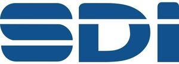

Trade Mark Journal No.2026/009 27 February 2026
WO0000001889686 (9,10,44)
Office of origin: Russian Federation
Date of International Registration:18 August 2025
Date of designation in the UK:
18 August 2025

The mark contains the colours blue and white.
- Class 9
- Scientific, research, navigation, surveying, photographic, cinematographic, audiovisual, optical, weighing, measuring, signalling, detecting, testing, inspecting, life-saving and teaching apparatus and instruments; apparatus and instruments for conducting, switching, transforming, accumulating, regulating or controlling the distribution or use of electricity; apparatus and instruments for recording, transmitting, reproducing or processing sound, images or data; recorded and downloadable media, computer software, blank digital or analogue recording and storage media; mechanisms for coin-operated apparatus; cash registers, calculating devices; computers and computer peripheral devices; diving suits, divers' masks, ear plugs for divers, nose clips for divers and swimmers, gloves for divers, breathing apparatus for underwater swimming; fire extinguishing apparatus; 3D spectacles; 3D scanners; DVD players; juke boxes, musical; fire engines; answering machines; electrical adapters; batteries for electronic cigarettes; accumulators, electric; batteries, electric, for vehicles; accelerometers; actinometers; alidades; breathalyzers; altimeters; ear pads for headphones; ammeters; apparatus for testing breast milk, other than for medical or veterinary use; nanoparticle size analysers; anemometers; anodes; aerials; anticathodes; apertometers [optics]; high-frequency apparatus; testing apparatus not for medical purposes; electro-dynamic apparatus for the remote control of railway points; electro-dynamic apparatus for the remote control of signals; monitoring apparatus, other than for medical purposes; sound recording apparatus; Global Positioning System [GPS] apparatus; diagnostic apparatus for research laboratory use; remote control apparatus; distillation apparatus for scientific purposes; diffraction apparatus [microscopy]; air analysis apparatus; apparatus to check franking; sound transmitting apparatus; breathing apparatus, not for medical purposes; apparatus and installations for the production of X-rays, not for medical purposes; electric apparatus for commutation; magnetic resonance imaging [MRI] apparatus, not for medical purposes; intercommunication apparatus; stills for laboratory experiments; projection apparatus; holographic projection apparatus; radiological apparatus for industrial purposes; X-ray apparatus not for medical purposes; blueprint apparatus; flashing lights [luminous signals]; stereoscopic apparatus; telephone apparatus; ultrasonic imaging apparatus, not for medical purposes; facsimile machines; fermentation apparatus for laboratory use; phototelegraphy apparatus; igniting apparatus, electric, for igniting at a distance; acid hydrometers; salinometers; acidimeters for batteries; aerometers; beacons, luminous; battery jars; automated teller machines [ATM]; barometers; anode batteries; galvanic batteries; ignition batteries; solar batteries; solar panels for the production of electricity; batteries, electric; balances [steelyards]; ear plugs for divers; betatrons; binoculars; bioreactors for cell culturing for scientific research; bioreactors for laboratory use; biochips; electronic tags for goods; lens hoods; magnetic tape units for computers; computer memory devices; fire hose nozzles; encoded identification bracelets, magnetic; connected bracelets [measuring instruments]; safety tarpaulins; electronic key fobs being remote control apparatus; bullet-proof clothing; signalling buoys; life buoys; marking buoys; directional compasses; laboratory burettes; vacuum gauges; variometers; internal cooling fans for computers; verniers; scales; baby scales; letter scales; bathroom scales; weighbridges; precision balances; scales with body mass analysers; levelling staffs [surveying instruments]; camcorders; video baby monitors; video cassettes; video mixing desks; video projectors; video telephones; video screens; viewfinders, photographic; electric plugs; micrometer screws for optical instruments; viscosimeters; circuit closers; wavemeters; voltmeters; flash lamps for smartphones; mechanical signs; digital signs; switchboxes [electricity]; current rectifiers; gas testing instruments; gasometers [measuring instruments]; galvanometers; hands-free kits for telephones; headsets; headsets for playing video games; heliographic apparatus; apparatus for generating gas for calibration purposes; ozonizers for calibration purposes; hygrometers; wet suits; dry suits; dive skins; hydrometers; weights; peepholes [magnifying lenses] for doors; hairdressing training heads [teaching apparatus]; holograms; plotters; loudspeakers; sounding leads; plumb bobs; range finders; gauges; parking sensors for vehicles; piezoelectric sensors; densimeters; densitometers, not for medical purposes; holders adapted for mobile telephones and smartphones; detectors; smoke detectors; infrared detectors; counterfeit coin detectors; joysticks for use with computers, other than for video games; transparencies [photography]; slide projectors; diaphragms [photography]; dictating machines; thin film speakers; wearable speakers; dynamometers; light-emitting diodes [LED]; quantum dot light-emitting diodes [QLED]; organic light-emitting diodes [OLED]; floppy disks; phonograph records; disks, magnetic; optical discs; circular slide rules; disk drives for computers; juke boxes for computers; head-mounted displays; wearable video display monitors; electronic numeric displays; DNA chips; dosimeters; electronic interactive whiteboards; electronic notice boards; electric wire harnesses for automobiles; bullet-proof vests; life jackets; reflective safety vests; identification threads for electric wires; nose clips for divers and swimmers; biometric locks; padlocks, electronic; locks, electric; bells [warning devices]; alarm bells, electric; electric door bells; signal bells; acoustic conduits; mirrors for inspecting work; safety signs [luminous]; road signs, luminous or mechanical; warning signs [luminous]; signs, luminous; downloadable emoticons for mobile telephones; marine depth finders; probes for scientific purposes; buzzers; needles for surveying compasses; needles for record players; eyewear; reflective articles for wear, for the prevention of accidents; measures; pressure measuring apparatus; wheel alignment meters; simulators for the steering and control of vehicles; inverters [electricity]; pressure indicators; automatic indicators of low pressure in vehicle tyres; temperature indicators; inductors [electricity]; incubators for bacteria culture; measuring instruments; cosmographic instruments; mathematical instruments; levelling instruments; surveying instruments; azimuth instruments; interfaces for computers; audio interfaces; ionization apparatus not for the treatment of air or water; satellite finder meters; spark-guards; coaxial cables; fibre optic cables; cables, electric; calipers; slide calipers; screw-tapping gauges; calorimeters; calculating machines; pocket calculators; decompression chambers; rearview cameras for vehicles; cinematographic cameras; thermal imaging cameras; mouth guards for sports; life-saving capsules for natural disasters; electronic pens for visual display units; holders for electric coils; biometric identity cards; identity cards, magnetic; video game cartridges; ink cartridges, unfilled, for printers and photocopiers; memory cards for video game machines; encoded magnetic cards; riding helmets; protective helmets; carriers for dark plates [photography]; cathodes; spools [photography]; choking coils [impedance]; coils, electric; electromagnetic coils; cinematographic film, exposed; computer keyboards; solenoid valves [electromagnetic switches]; wire connectors [electricity]; thin client computers; downloadable cryptographic keys for receiving and spending cryptocurrency; encoded key cards; electronic book readers; electronic agendas; push buttons for bells; mouse pads; dashboard mats adapted for holding mobile telephones and smartphones; magnetic encoders; visors for helmets; collectors, electric; portable speakers; calibrating rings; smart rings; ring holders for mobile telephones; ring stands for mobile telephones; ring sizers; protective suits for aviators; commutators; compact discs [audio-video]; compact discs [read-only memory]; comparators; marine compasses; quantum computers; laptop computers; tablet computers; notebook computers; wearable computers; condensers [capacitors]; contacts, electric; virtual reality controllers; controllers for servo motors; musical instrument digital interface controllers being audio interfaces; electronic controllers for servo motors; wind socks for indicating wind direction; traffic cones; branch boxes [electricity]; distribution boxes [electricity]; junction boxes [electricity]; battery boxes; cabinets for loudspeakers; diving suits; haptic suits, other than for medical purposes; cryptocurrency hardware wallets; downloadable e-wallets; motion tracking mounts for cameras; evacuation chairs; galena crystals [detectors]; covers for electric outlets; logs [measuring instruments]; lasers, not for medical purposes; lactodensimeters; lactometers; vacuum tubes [radio]; darkroom lamps [photography]; selfie ring lights for smartphones; thermionic valves; amplifying tubes; flashlights [photography]; lanyards for mobile telephones; head cleaning tapes [recording]; magnetic tapes; videotapes; surveying chains; fire escapes; rulers [measuring instruments]; square rulers for measuring; slide-rules; contact lenses; correcting lenses [optics]; optical lenses; optical condensers; sounding lines; electricity conduits; measuring spoons; magnifying glasses [optics]; thread counters; magnets; decorative magnets; close-up lenses; crash test dummies; resuscitation mannequins [teaching apparatus]; trackballs [computer peripherals]; pressure gauges; security tokens [encryption devices]; computer network routers; divers' masks; solderers' helmets; protective masks, not for medical purposes; protective face shields for workers; dust masks incorporating air purification; respiratory masks, not for medical purposes; materials for electricity mains [wires, cables]; voting machines; money counting and sorting machines; material testing instruments and machines; furniture especially made for laboratories; megaphones; portable media players; diaphragms [acoustics]; diaphragms for scientific apparatus; metal detectors for industrial or military purposes; digital weather stations; metronomes; rules [measuring instruments]; carpenters' rules; dressmakers' measures; mechanisms for counter-operated apparatus; coin-operated mechanisms for television sets; shutter releases [photography]; micrometers; microprocessors; microscopes; microtomes; microphones; wireless speaker microphones; audio mixers; modems; lightning conductors; monitors [computer hardware]; monitors [computer programs]; selfie sticks [hand-held monopods]; terminals [electricity]; junction sleeves for electric cables; mouse [computer peripheral]; data sets, recorded or downloadable; teeth protectors; temperature indicator labels, not for medical purposes; knee-pads for workers; headphones; earpieces for remote communication; surveyors' levels; sound recording carriers; magnetic data media; optical data media; electronic sheet music, downloadable; downloadable application software for virtual environments; computer game software, recorded; computer software, recorded; downloadable computer software for managing cryptocurrency transactions using blockchain technology; software as a medical device [SaMD], downloadable; sheaths for electric cables; identification sheaths for electric wires; weighing machines; computer hardware; punched card machines for offices; shoes for protection against accidents, irradiation and fire; objectives [lenses] [optics]; lenses for astrophotography; selfie lenses; egg-candlers; fire extinguishers; rescue laser signalling flares; electrified fences; limiters [electricity]; downloadable virtual clothing; clothing for protection against accidents, irradiation and fire; clothing for protection against fire; asbestos clothing for protection against fire; motorcyclists' clothing for protection against accident or injury; clothing especially made for laboratories; survival blankets; octants; eyepieces; ohmmeters; wrist rests for use with computers; spectacle frames; oscillographs; plumb lines; mirrors [optics]; spectacles; anti-glare glasses; spectacles for correcting colour vision deficiency; sunglasses; sunglasses for pets; goggles for sports; electronic collars to train animals; finger sizers; signalling panels, luminous or mechanical; biometric passports; wah-wah pedals; effects pedals for guitars; radio pagers; pince-nez; electronic pocket translators; transmitters [telecommunication]; telephone transmitters; transmitters of electronic signals; switches, electric; periscopes; data gloves; gloves for divers; gloves for protection against accidents; gloves for protection against X-rays for industrial purposes; asbestos gloves for protection against accidents; insulating gloves for protection against accidents; furnaces for laboratory use; droppers for measuring, other than for medical or household purposes; laboratory pipettes; pyrometers; planimeters; plane tables [surveying instruments]; plates for batteries; computer software platforms, recorded or downloadable; wafers for integrated circuits; printed circuit boards; compact disc players; cassette players; protective films adapted for computer screens; protective films adapted for smartphones; sound recording strips; screen protectors for mobile telephones; X-ray films, exposed; films, exposed; life-saving rafts; animal signalling rattles for directing livestock; gimbals for smartphones; gimbals for digital cameras; laboratory trays; stands adapted for laptops; in-car telephone handset cradles; cooling pads for laptop computers; airbags for safety purposes for fall protection; semiconductors; polarimeters; personal digital assistants [PDAs]; fire pumps; measuring glassware; weight belts for divers; life belts; fuses; circuit breakers; converters, electric; telerupters; food analysis apparatus; diagnostic apparatus, not for medical purposes; distance recording apparatus; distance measuring apparatus; speed measuring apparatus [photography]; appliances for measuring the thickness of leather; apparatus for measuring the thickness of skins; speed checking apparatus for vehicles; time recording apparatus; apparatus and instruments for astronomy; nautical apparatus and instruments; apparatus and instruments for physics; chemistry apparatus and instruments; measuring apparatus; measuring devices, electric; boiler control instruments; meteorological instruments; naval signalling apparatus; observation instruments; navigation apparatus for vehicles [on-board computers]; satellite navigational apparatus; regulating apparatus, electric; telecommunication apparatus in the form of jewellery; precision measuring apparatus; electric actuators; electric linear actuators; audio- and video-receivers; prisms [optics]; computer software applications, downloadable; downloadable computer software applications for minting non-fungible tokens [NFTs]; wireless portable printers for use with laptops and mobile devices; ticket printers; printers for use with computers; hemline markers; retorts' stands; apparatus for changing record player needles; drainers for use in photography; cleaning apparatus for phonograph records; fire beaters; sighting telescopes for firearms; telescopic sights for artillery; test tubes; pressure indicator plugs for valves; magnetic wires; telegraph wires; telephone wires; wires, electric; conductors, electric; copper wire, insulated; fuse wire; computer programs, recorded; computer game software, downloadable; computer programs, downloadable; computer operating programs, recorded; computer screen saver software, recorded or downloadable; record players; processors [central processing units]; rods for water diviners; electronic publications, downloadable; distribution consoles [electricity]; control panels [electricity]; radar apparatus; baby monitors; masts for wireless aerials; transmitting sets [telecommunication]; radios; vehicle radios; sprinkler systems for fire protection; sounding rockets; frames for photographic transparencies; screens for photoengraving; flowmeters; frequency extenders; walkie-talkies; voltage surge protectors; voltage regulators for vehicles; light dimmers [regulators], electric; stage lighting regulators; speed regulators for record players; cell switches [electricity]; washing trays [photography]; marking gauges [joinery]; T-squares for measuring; time switches, automatic; relays, electric; safety restraints, other than for vehicle seats and sports equipment; body harnesses for support when lifting loads; X-ray photographs, other than for medical purposes; rheostats; respirators for filtering air, not for medical purposes; retorts; refractometers; refractors; grids for batteries; security surveillance robots; laboratory robots; teaching robots; telepresence robots; user-programmable humanoid robots, not configured; humanoid robots with artificial intelligence for use in scientific research; humanoid robots with artificial intelligence for preparing beverages; humanoid robots having communication and learning functions for assisting and entertaining people; electric sockets; height measuring instruments; speaking tubes; horns for loudspeakers; subwoofers; saccharometers; optical fibres [light conducting filaments]; traffic-light apparatus [signalling devices]; dog whistles; signalling whistles; sports whistles; sextants; safety nets; nets for protection against accidents; fire alarms; signals, luminous or mechanical; sirens; electronic access control systems for interlocking doors; autonomous navigation systems for ships; missile warning systems; scanners [apparatus] for performing automotive diagnostics; scanners for data processing; portable document scanners; hand-held electronic dictionaries; smart speakers; integrated circuit cards [smart cards]; smartglasses; smartphones; foldable smartphones; smartwatches; connections for electric lines; couplings, electric; connectors [electricity]; sonars; sound locating instruments; lighting ballasts; resistances, electric; spectrograph apparatus; spectroscopes; speed indicators; alcoholmeters; satellites for scientific purposes; protection devices for personal use against accidents; audiovisual teaching apparatus; charging stations for electric vehicles; radiotelegraphy sets; radiotelephony sets; spectacle lenses; optical glass; personal stereos; stereoscopes; stands for photographic apparatus; stroboscopes; fire boats; sulfitometers; bags adapted for laptops; drying racks [photography]; spherometers; integrated circuits; printed circuits; counters; parking meters; mileage recorders for vehicles; portable ultrafine dust meters; revolution counters; abacuses; egg timers [sandglasses]; taximeters; tachometers; television apparatus; telegraphs [apparatus]; telescopes; teleprompters; teleprinters; mobile telephones; cordless telephones; theodolites; ticket dispensing terminals, electronic; credit card terminals; interactive touchscreen terminals; point-of-sale [POS] terminals; self-checkout terminals; thermo-hygrometers; thermometers, not for medical purposes; thermostats; thermostats for vehicles; climate control digital thermostats; crucibles [laboratory]; tone arms for record players; toner cartridges, unfilled, for printers and photocopiers; totalizators; transistors [electronic]; transponders; protractors [measuring instruments]; transformers [electricity]; step-up transformers; resuscitation training simulators; vehicle breakdown warning triangles; triodes; starter cables for motors; discharge tubes, electric, other than for lighting; capillary tubes for laboratory use; neon signs; Pitot tubes; X-ray tubes not for medical purposes; telephone receivers; headgear being protective helmets; squares for measuring; quantity indicators; petrol gauges; water level indicators; electric loss indicators; light-emitting electronic pointers; slope indicators; levels [instruments for determining the horizontal]; mercury levels; spirit levels; urinometers; amplifiers; amplifiers for servo motors; particle accelerators; electric installations for the remote control of industrial operations; steering apparatus, automatic, for vehicles; balancing apparatus; video recorders; sound reproduction apparatus; invoicing machines; tape recorders; protection devices against X-rays, not for medical purposes; dust measuring apparatus; railway traffic safety appliances; data processing apparatus; oxygen transvasing apparatus; theft prevention installations, electric; devices for the projection of virtual keyboards; film cutting apparatus; drying apparatus for photographic prints; optical character readers; centering apparatus for photographic transparencies; battery chargers; chargers for mobile telephones; chargers for electric accumulators; chargers for electronic cigarettes; portable power chargers; acoustic alarms; sounding apparatus and machines; life-saving apparatus and equipment; apparatus for editing cinematographic film; cathodic anti-corrosion apparatus; couplers [data processing equipment]; wearable activity trackers; anti-theft warning apparatus; computer peripheral devices; anti-interference devices [electricity]; dosage dispensers, not for medical use [measuring apparatus]; demagnetizing apparatus for magnetic tapes; acoustic couplers; alarms; fog signals, non-explosive; rescue flares, non-explosive and non-pyrotechnic; whistle alarms; adding machines; readers [data processing equipment]; heat regulating apparatus; photocopiers [photographic, electrostatic, thermic]; electric and electronic effects units for musical instruments; bar code readers; head-up display apparatus for vehicles; downloadable ring tones for mobile phones; downloadable image files; downloadable music files; downloadable digital music files authenticated by non-fungible tokens [NFTs]; downloadable digital image files authenticated by non-fungible tokens [NFTs]; animated cartoons; filters for respiratory masks, not for medical purposes; filters for ultraviolet rays, for photography; filters for use in photography; USB flash drives; magic lanterns; optical lanterns; signal lanterns; cameras [photography]; glazing apparatus for photographic prints; shutters [photography]; darkrooms [photography]; photometers; flash-bulbs [photography]; digital photo frames; enlarging apparatus [photography]; photovoltaic cells; containers for contact lenses; contact lens cases incorporating ultrasonic cleaning functions; spectacle cases; containers for microscope slides; cases for smartphones; cases especially made for photographic apparatus and instruments; chromatography apparatus for laboratory use; chronographs [time recording apparatus]; laboratory centrifuges; home automation hubs; spectacle chains; cyclotrons; compasses for measuring; frequency meters; time clocks [time recording devices]; Petri dishes; sleeves for laptops; covers for personal digital assistants [PDAs]; covers for tablet computers; covers for smartphones; cases for smartphones incorporating a keyboard; fire blankets; chips [integrated circuits]; jigs [measuring instruments]; pedometers; fire-extinguishing balls; meteorological balloons; electrified rails for mounting spot lights; asbestos screens for firefighters; fire hose; virtual reality headsets; protective helmets for sports; neural helmets, not for medical purposes; head guards for sports; lifeboats; snorkels; cell phone straps; spectacle cords; tripods for cameras; switchboards; distribution boards [electricity]; equalizers [audio apparatus]; screens [photography]; projection screens; radiology screens for industrial purposes; fluorescent screens; exposure meters [light meters]; electrolysis apparatus for laboratory use; ducts [electricity]; galvanic cells; downloadable graphics for mobile telephones; epidiascopes; ergometers; armatures [electricity]; black boxes [data recorders].
- Class 10
- Surgical, medical, dental and veterinary apparatus and instruments; artificial limbs, eyes and teeth; orthopaedic articles; suture materials; therapeutic and assistive devices adapted for persons with disabilities; massage apparatus; apparatus, devices and articles for nursing infants; sexual activity apparatus, devices and articles; apparatus for testing breast milk for medical purposes; analysers for bacterial identification for medical purposes; cholesterol meters; diagnostic apparatus for medical purposes used in medical laboratories; blood testing apparatus; testing apparatus for medical purposes; anaesthetic apparatus; galvanic therapeutic appliances; apparatus for artificial respiration; apparatus for the treatment of deafness; physical exercise apparatus for medical purposes; body rehabilitation apparatus for medical purposes; dental apparatus and instruments; surgical apparatus and instruments; resuscitation apparatus; dental apparatus, electric; physiotherapy apparatus; bed vibrators; hot air therapeutic apparatus; diagnostic apparatus for medical purposes; traction apparatus for medical purposes; radiotherapy apparatus; microdermabrasion apparatus for medical or therapeutic purposes; apparatus for administering inhalants for medical purposes; apparatus for the regeneration of stem cells for medical purposes; apparatus for DNA and RNA testing for medical purposes; breathing apparatus for medical purposes; apparatus and installations for the production of X-rays, for medical purposes; magnetic resonance imaging [MRI] apparatus for medical purposes; orthodontic appliances; medical cooling apparatus for treating heatstroke; medical cooling apparatus for use in therapeutic hypothermia; radiological apparatus for medical purposes; X-ray apparatus for medical purposes; LED facial aesthetic treatment apparatus; hearing aids; ultrasonic imaging apparatus for medical purposes; facial aesthetic treatment apparatus using ultrasonic waves; nasal aspirators; audiometers; trusses; maternity belts; support bandages; cupping glasses; ear plugs [hearing protection devices]; ear plugs for swimmers; elastic bandages, not for dressings; dental burs; acupressure bands; bracelets for medical purposes; anti-nausea wristbands; anti-rheumatism bracelets; feeding bottles; air cushions for medical purposes; vaporizers for medical purposes; hot air vibrators for medical purposes; vibromassage apparatus; gastroscopes; haemocytometers; glucometers; lice combs; surgical sponges; pill cutters; densitometers for medical purposes; defibrillators; dialyzers; bath boards adapted for persons with physical disabilities; containers especially made for medical waste; clips, surgical; mirrors for dentists; mirrors for surgeons; probes for medical purposes; urethral probes; artificial teeth; acupuncture needles; suture needles; needles for medical purposes; pill crushers; biodegradable bone fixation implants; contraceptive implants; surgical implants comprised of artificial materials; inhalers; hydrogen inhalers; injectors for medical purposes; incubators for medical purposes; incubators for babies; obstetric apparatus; obstetric apparatus for cattle; electric acupuncture instruments; surgical cutlery; insufflators; isolation booths fitted with medical equipment; chambers for inhalers; endoscopy cameras for medical purposes; cannulae; droppers for medical purposes; dropper bottles for medical purposes; heart rate monitoring apparatus; heart pacemakers; catheters; keratometers; catgut; draw-sheets for sick beds; clips for dummies; artificial skin for surgical purposes; hospital beds; menstrual cups; biomagnetic rings for therapeutic or medical purposes; teething rings; anti-rheumatism rings; compressors [surgical]; thermo-electric compresses [surgery]; oxygen concentrators for medical purposes; abdominal corsets; corsets for medical purposes; crutches; haptic suits for medical purposes; dentists' armchairs; massage chairs with built-in massage apparatus; armchairs for medical or dental purposes; commode chairs; crystals for therapeutic purposes; waterbeds for medical purposes; air beds for medical purposes; beds specially made for medical purposes; feeding bottle valves; love dolls [sex dolls]; lasers for medical purposes; lamps for medical purposes; curing lamps for medical purposes; quartz lamps for medical purposes; ultraviolet ray lamps for medical purposes; lancets; kinesiology tapes; athletic tapes; lenses [intraocular prostheses] for surgical implantation; spoons for administering medicine; spoons for patients with tremor; therapeutic magnets; sanitary masks; reusable sanitary masks made of gauze; masks for use by medical personnel; respiratory masks for artificial respiration; protective masks for medical purposes; anaesthetic masks; respiratory masks for medical purposes; disposable steam-heated masks for therapeutic purposes; LED masks for therapeutic purposes; therapeutic facial masks; gum massagers for babies; childbirth mattresses; air mattresses for medical purposes; furniture especially made for medical purposes; water bags for medical purposes; breast pumps; body fat monitors; body composition monitors; urinals being vessels; portable hand-held urinals; teeth protectors for dental purposes; nipple shields for breastfeeding; temperature indicator labels for medical purposes; knee bandages, orthopaedic; tips for crutches; nanorobots for medical purposes; fingerstalls for medical purposes; bone void fillers comprised of artificial materials; medical guidewires; pumps for medical purposes; nebulisers for medical purposes; thread, surgical; knives for surgical purposes; scissors for surgery; ambulance stretchers; stretchers, wheeled; boots for medical purposes; orthopaedic footwear; clothing especially for operating rooms; compression garments; blankets, electric, for medical purposes; supports for flat feet; ophthalmoscopes; cooling pads for first aid purposes; portable earpicks with endoscopy function; disposable steam-heated patches for therapeutic purposes; slings [support bandages]; gloves for massage; gloves for medical purposes; pessaries; saws for surgical purposes; ear picks; balling guns; electric massage guns; cooling patches for medical purposes; spittoons for medical purposes; plaster bandages for orthopaedic purposes; orthopaedic bandages for joints; abdominal pads; cushions for medical purposes; pads for preventing pressure sores on patient bodies; air pillows for medical purposes; soporific pillows for insomnia; heating cushions, electric, for medical purposes; patient hoists; abdominal belts; galvanic belts for medical purposes; hypogastric belts; belts for medical purposes; orthopaedic belts; umbilical belts; belts, electric, for medical purposes; condoms; sphygmotensiometers; pulse meters; esthetic massage apparatus; diabetic monitoring apparatus; urological apparatus and instruments; brushes for cleaning body cavities; appliances for washing body cavities; corn knives; incontinence sheets; sterile sheets, surgical; surgical drapes; hair prostheses; artificial breasts; artificial jaws; ice bags for medical purposes; toe separators for orthopaedic purposes; surgical bougies; orthodontic rubber bands; X-ray photographs for medical purposes; respirators for artificial respiration; respirators for filtering air for medical purposes; surgical robots; ear trumpets; strait jackets; sex toys; scalpels; tongue scrapers; feeding bottle teats; baby feeding dummies; dummies for babies; receptacles for applying medicines; spirometers [medical apparatus]; douche bags; implantable subcutaneous drug delivery devices; hearing protectors; contraceptives, non-chemical; orthopaedic soles; stents; drug-coated stents for thrombosis; stethoscopes; medical examination tables; operating tables; basins for medical purposes; bed pans; instrument cases for use by doctors; arch supports for footwear; suspensory bandages; thermal packs for first aid purposes; thermometers for medical purposes; tomographs for medical purposes; trocars; walking sticks for medical purposes; quad canes for medical purposes; drainage tubes for medical purposes; capillary tubes for medical use; X-ray tubes for medical purposes; radium tubes for medical purposes; intrauterine devices; protection devices against X-rays, for medical purposes; apparatus for acne treatment; dosage dispensers for medical use; enema apparatus for medical purposes; filters for respiratory masks for medical purposes; filters for ultraviolet rays, for medical purposes; patient examination gowns; wheeled walkers to aid mobility; walking frames for persons with disabilities; cases fitted for medical instruments; elastic stockings for surgical purposes; stockings for varices; splints, surgical; laser therapy helmets for treating alopecia; neural helmets for medical purposes; tongue depressors for medical purposes; vaginal syringes; syringes for injections; syringes for medical purposes; hypodermic syringes; uterine syringes; urethral syringes; pins for artificial teeth; castrating pincers; forceps; robotic exoskeleton suits for medical purposes; radiology screens for medical purposes; electrodes for medical use; electrocardiographs; brain pacemakers; dental axiographs; dental electromyographs; dental intraoral scanners.
- Class 44
- Medical services; veterinary services; hygienic and beauty care for human beings or animals; agriculture, aquaculture, horticulture and forestry services; rental of bottles and containers containing gas for medical purposes; rental of hydrogen water generators for baths; rental of animals for gardening purposes; medical equipment rental; rental of spectacles; rental of hair styling apparatus; rental of respiratory masks for artificial respiration; rental of gardening implements; rental of sanitary installations; farming equipment rental; rental of beehives; rental of surgical microscopes; rental of surgical robots; art therapy; landscape architecture; reforestation services; cultivation of plants; depilatory waxing; diagnosis of visual processing disorders; landscape design; acupuncture; wreath making; hair implantation; medical advice for persons with disabilities; consultancy in the field of viticulture; pharmacy advice; occupational health consultancy; medical treatment using cultured cells; animal-assisted therapy; manicuring; massage; remote monitoring of medical data for medical diagnosis and treatment; music therapy; pruning of trees; medical examination; medical examination for quarantine clearance purposes; horticulture; artificial insemination services; transplanting of trees; body piercing; veterinary assistance; medical assistance; palliative care; mental health services; tree planting for carbon offsetting purposes; providing community gardening facilities; providing service animals to persons with disabilities; providing mental health rehabilitation facilities; providing physical rehabilitation facilities; preparation of prescriptions by pharmacists; aerial and surface spreading of fertilizers and other agricultural chemicals; animal breeding; rehabilitation for substance abuse patients; gardening; landscape gardening; medical screening; blood bank services; health care; health counselling; dietary and nutritional advice; flower arranging; tattooing; cupping therapy; chiropractic; speech therapy; dance therapy; vermin exterminating for agriculture, aquaculture, horticulture and forestry; weed killing; wildlife management; birth attendant services; health spa services; human tissue bank services; cultured cell bank services for medical transplantation; barber shop services; hospital services; aquaculture services; aromatherapy services; viticulture services; convalescent home services; rest home services; nursing home services; beautician services; medical clinic services; health centre services; medical analysis services for diagnostic and treatment purposes provided by medical laboratories; home-visit nursing care; alternative medicine services; public bath services for hygiene purposes; opticians' services; optometry services; orthodontic services; hairdressing; plant nursery services; pest control services for agriculture, aquaculture, horticulture and forestry; Attention Deficit Hyperactivity Disorder screening services; learning disability screening services; Attention Deficit Disorder screening services; hair dyeing services; health assessment services; postnatal care services; vaccination services; in vitro fertilization services; services of a psychologist; regenerative medicine services; beauty salon services; sanatorium services; sauna services; solarium services; dentistry services; telemedicine services; therapy services; Turkish bath services; hospice services; aesthetician services; nursing, medical; lawn care; pet grooming; animal grooming; physiotherapy; tree surgery; plastic surgery; occupational therapy.
Dorel Nike
Representative: BELOKOPYTOV Andrey Viktorovich, a/ya 312, RU-101000 Moskva, RUSSIAN FEDERATION